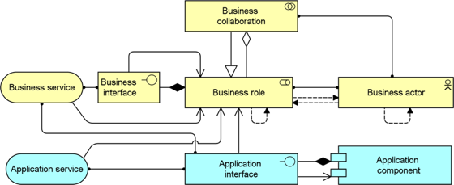

The Actor Co-operation viewpoint focuses on the relations of actors with each other and their environment. A common example of this is the "context diagram", which puts an organization into its environment, consisting of external parties such as customers, suppliers, and other business partners. It is very useful in determining external dependencies and collaborations and shows the value chain or network in which the actor operates.
Another important use of the Actor Co-operation viewpoint is in showing how a number of co-operating business actors and/or application components together realize a business process. Hence, in this view, both business actors or roles and application components may occur.
| Stakeholders | Enterprise, process, and domain architects |
| Concerns | Relations of actors with their environment |
| Purpose | Designing, deciding, informing |
| Abstraction Level | Detail |
| Layer | Business layer (Application layer) |
| Aspects | Active Structure, Behaviour |
Concepts and Relations
